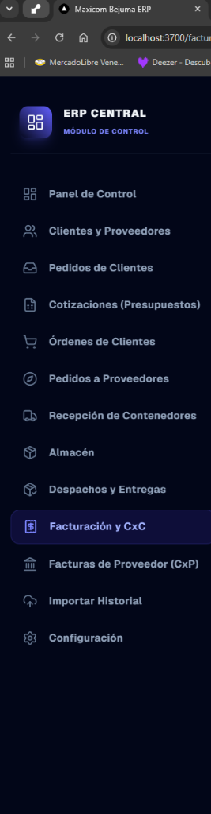
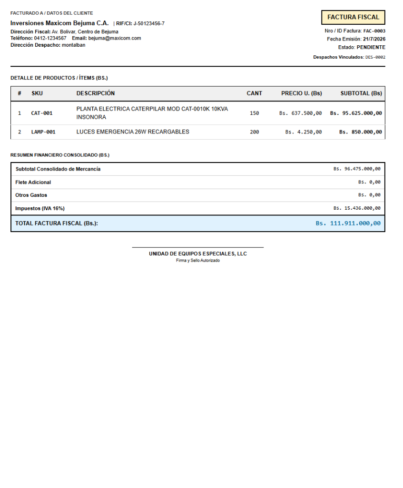
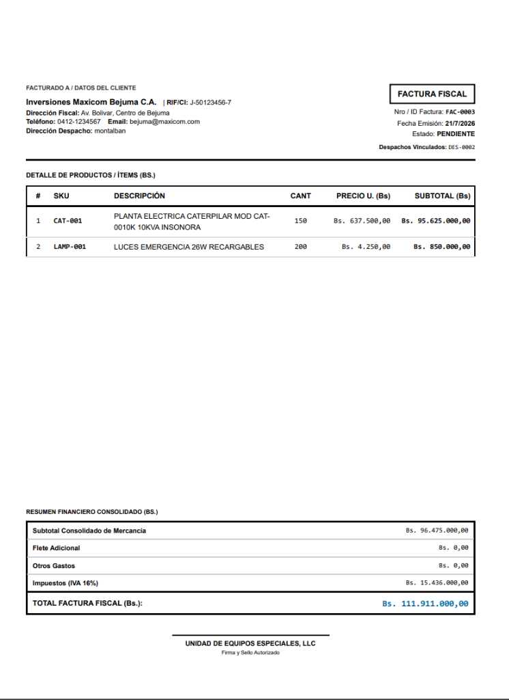
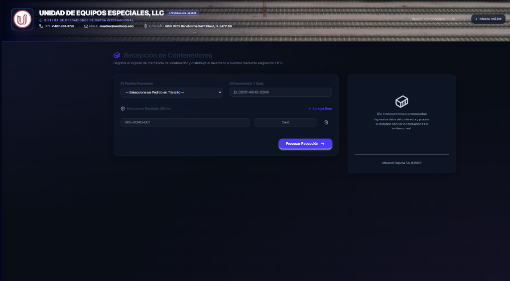
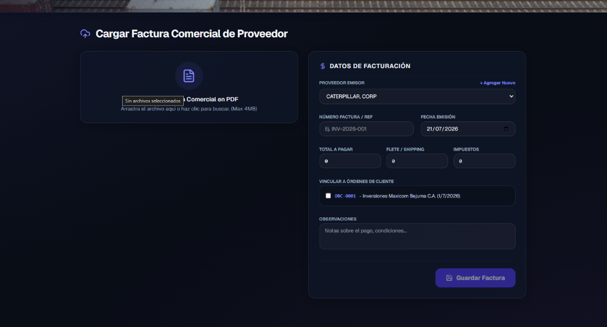
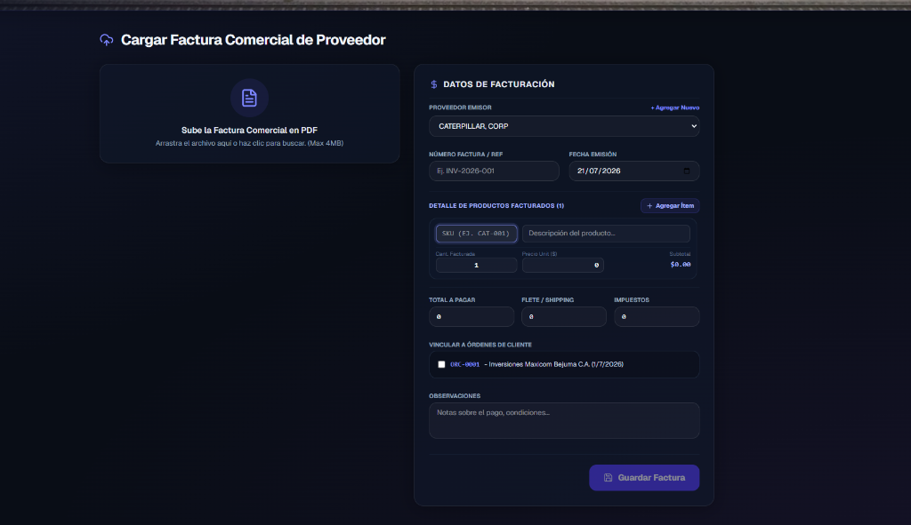
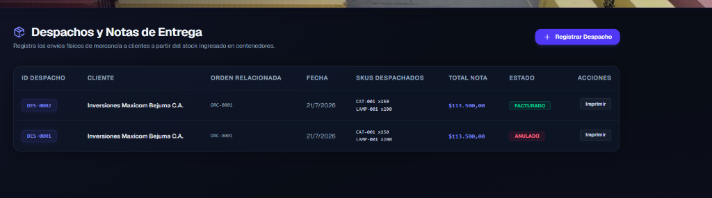
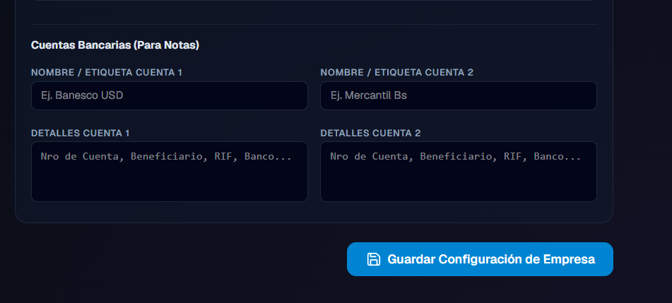

MANUAL DE PROCEDIMIENTOS
Guía Operativa Paso a Paso con Imágenes de Referencia
Versión 1.0 (2026)
El Ciclo Operativo en Maximport
Este manual de procedimientos explica paso a paso el flujo de trabajo de compra, importación, despacho y cobranza del ERP. Cada procedimiento incluye imágenes de captura del sistema real para que los operadores sigan las instrucciones de forma visual.
Navegación del Sistema
El sistema se controla por completo desde el menú lateral izquierdo. Permite acceder a los paneles de logística de carga (Recepción de Contenedores), comercialización (Cotizaciones, Órdenes de Clientes) y contabilidad (Facturación y CxC, Facturas de Proveedor).

Fig 1. Barra de Navegación Lateral
Procedimiento 1: Creación de Pedidos por IA (Gemini)
Este procedimiento permite digitalizar órdenes de compra enviadas por los clientes en formato PDF, automatizando el llenado de productos mediante inteligencia artificial.
Pasos a seguir:
- Ve al menú lateral izquierdo y haz clic en Pedidos de Clientes.
- Haz clic en el botón superior "Cargar PDF por IA".
- Arrastra o selecciona el archivo PDF del pedido. La IA de Google Gemini leerá el contenido y extraerá la información fiscal del cliente, los SKU, la cantidad pedida y los precios unitarios.
- Revisa las filas en la pantalla de previsualización antes de guardar el pedido en la base de datos de Firestore.

Fig 2. Pantalla de previsualización de datos por IA

Fig 3. Formulario verificado listo para registrar
Procedimiento 2: Cotizaciones y Presupuesto Arancelario
Este procedimiento permite calcular el costo estimado de importación y venta de mercancía nacional sumando proporcionalmente gastos logísticos.
Pasos a seguir:
- Ve a Cotizaciones y haz clic en Nueva Cotización.
- Ingresa los productos solicitados.
- En los campos numéricos de la derecha, ingresa los importes por **Flete ($)**, **Arancel ($)** y **Otros Gastos ($)** de importación.
- El sistema distribuirá de forma ponderada los montos extras sobre cada producto para mostrar el costo neto de cada uno en la vista previa del PDF comercial.

Fig 4. Panel de desglose de arancel, flete y otros gastos
Procedimiento 3: Recepción de Contenedores y Distribución FIFO
Este procedimiento describe el ingreso físico de la carga del puerto y cómo se distribuye a las órdenes de los clientes pendientes.
Pasos a seguir:
- Al llegar el contenedor físico, ve a Recepción de Contenedores y haz clic en Nueva Recepción.
- El sistema te mostrará los SKU recibidos y cruzará los datos con las órdenes pendientes de los clientes de forma automática mediante el método FIFO (el pedido más viejo tiene prioridad).
- Si deseas alterar la prioridad del despacho del inventario parcial, activa la casilla **"Habilitar Distribución Manual"** para ajustar las cantidades de cada cliente libremente.
- Haz clic en **Procesar Recepción** para ingresar el stock al Almacén Local.

Fig 5. Formulario de ingreso de lote y distribución automática

Fig 6. Vista de pre-distribución a clientes
Procedimiento 4: Despachos y Notas de Entrega (Con/Sin Precios)
Este procedimiento controla la preparación del despacho físico y la impresión del soporte de entrega al transportista o al cliente.
Pasos a seguir:
- Ve a Despachos y Entregas y haz clic en la nota de entrega del cliente.
- En la barra de herramientas superior de impresión, activa o desactiva la opción **"Mostrar Precios"**:
* **Apagado:** La nota se imprime únicamente con SKU, cantidad y descripción (ideal para guías de transporte).
* **Encendido:** La nota muestra los totales comerciales (ideal para soporte de cobro al cliente).
- Elige el formato de moneda (**$ USD**, **Bs.** o **Bs. Libre pre-impreso**) y selecciona la cuenta bancaria de la empresa que se mostrará al pie del documento.

Fig 7. Vista previa de impresión de Nota de Entrega con precios y cuentas bancarias seleccionadas
Procedimiento 5: Facturación y Abonos con Tasa Binance
Este procedimiento describe cómo realizar cobros parciales a facturas emitidas a crédito y llevar el registro exacto de las tasas de cambio de cada abono.
Pasos a seguir:
- Ve a Facturación y CxC.
- Haz clic en el botón **"Cobrar"** al lado de la factura a crédito correspondiente.
- En el modal, selecciona la moneda de pago (**USD** o **BS**):
* Si seleccionas **BS (Bolívares)**, el sistema completará automáticamente la tasa de cambio con el valor de la tasa **Binance P2P** actual.
* Escribe la cantidad de bolívares recibidos y ajusta la tasa de cambio manualmente si es necesario. El sistema calculará en tiempo real los dólares equivalentes.
- Ingresa el método de pago local (Pago Móvil, Transferencia Bs.) y la referencia, y haz clic en **Registrar Cobro**.
- Para auditar el saldo pendiente, haz clic en **"Ver Abonos"** en la factura y se desplegará una tabla con el histórico detallado de abonos en Bolívares y dólares con sus respectivas tasas grabadas.

Fig 8. Formulario de registro de abono con selector de tasa
| Fecha |
Método |
Monto |
Equivalente USD |
| 18/08/2026 |
Pago Móvil |
Bs. 3,650.00 Tasa: 36.50 |
$100.00 |
Fig 9. Tabla de histórico de abonos con la tasa Binance registrada
Manual oficial de procedimientos - Maximport ERP Solutions. Todos los derechos reservados.